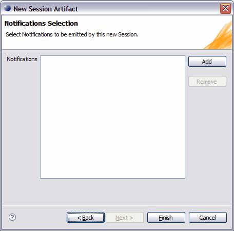

You specify the Notifications to be exposed by your Session Facade in the Notifcations Selection dialog of the New Session Artifact wizard. You use the Add or Remove buttons to select the Notifications that you want to add to the specification of your Session Facade Artifact.

© copyright 2005, 2006, 2007 Cisco Systems, Inc. - All rights reserved